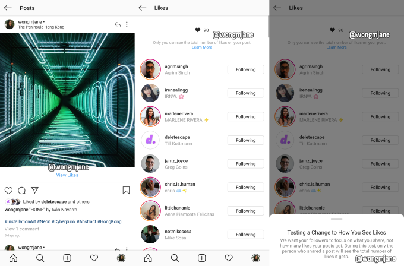

We want your followers to focus on what you share, not how many likes your posts get. During this test, only the person who shares a post will see the total number of likes it gets.
That’s how Instagram describes a seemingly small design change test with massive potential impact on users’ well-being.
Hiding Like counts could reduce herd mentality, where people just Like what’s already got tons of Likes. It could reduce the sense of competition on Instagram, since users won’t compare their own counts with those of more popular friends or superstar creators. And it could encourage creators to post what feels most authentic rather than trying to rack up Likes for everyone to see.
The design change test was spotted by Jane Manchun Wong, the prolific reverse-engineering expert and frequent TechCrunch tipster who has spotted tons of Instagram features before they’re officially confirmed or launched. Wong discovered the design change test in Instagram’s Android code and was able to generate the screenshots above.
You can see on the left that the Instagram feed post lacks a Like count, but still shows a few faces and a name of other people who’ve Liked it. Users are alerted that only they will see their post’s Like counts, and anyone else won’t. Many users delete posts that don’t immediately get “enough” Likes or post to their fake “Finstagram” accounts if they don’t think they’ll be proud of the hearts they collect. Hiding Like counts might get users posting more because they’ll be less self-conscious.
Instagram confirmed to TechCrunch that this design is an internal prototype that’s not visible to the public yet. A spokesperson told us: “We’re not testing this at the moment, but exploring ways to reduce pressure on Instagram is something we’re always thinking about.” Other features we’ve reported on in the same phase, such as video calling, soundtracks for Stories and the app’s time well spent dashboard, all went on to receive official launches.